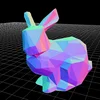
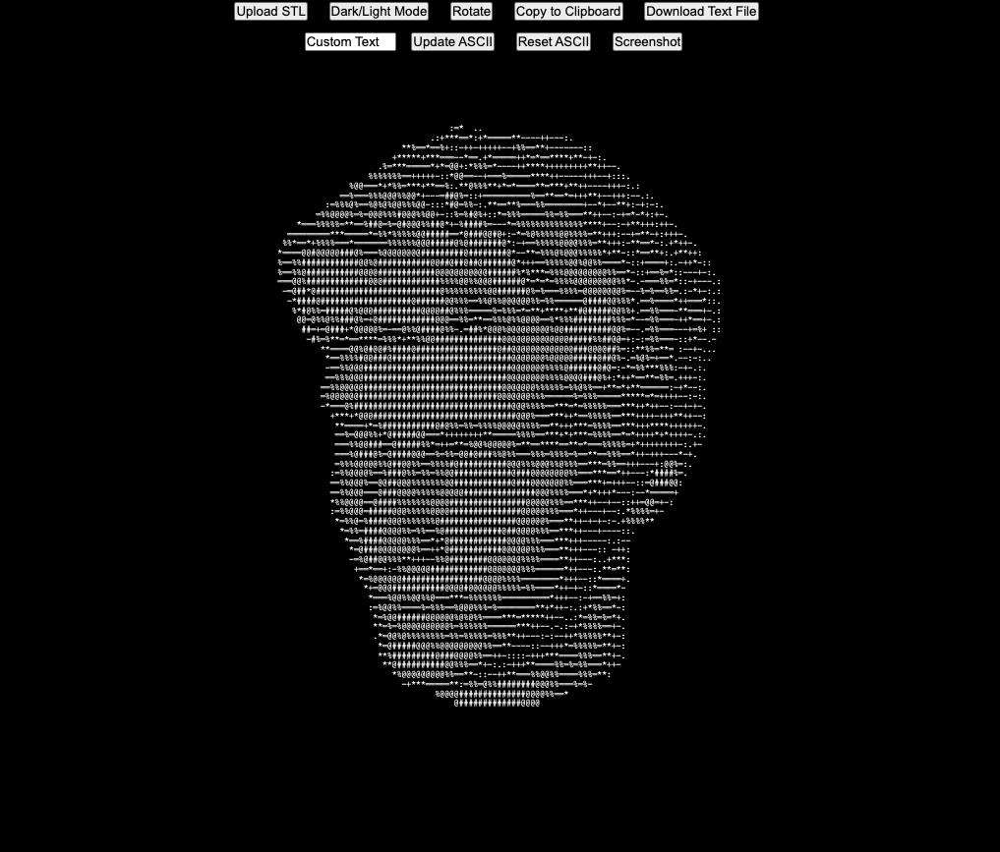

Andrew Sink
Hi! I'm enthusiastic about 3D printing, and I love sharing my projects!
YouTube (12M Views and Counting!)Follow on Twitter
Low Poly 3D Generator
STL TO ASCII Generator
ResinLapse / Make resin timelapse videos with your DSLR camera!
LinkedIn Buy me a coffee!
3D Printer Reviews on Tom's Hardware
3D Printer Reviews on 3DWithUs
3D Scans on Sketchfab
GitHub
Made with LittleLink and three.js.